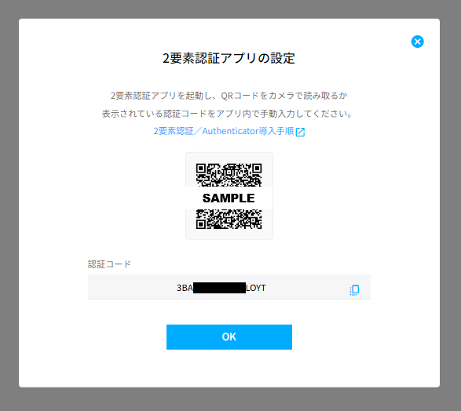
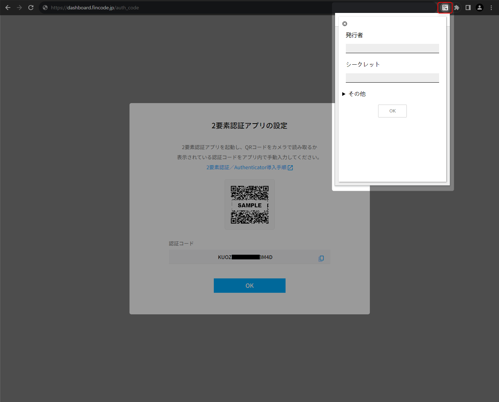
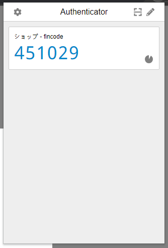
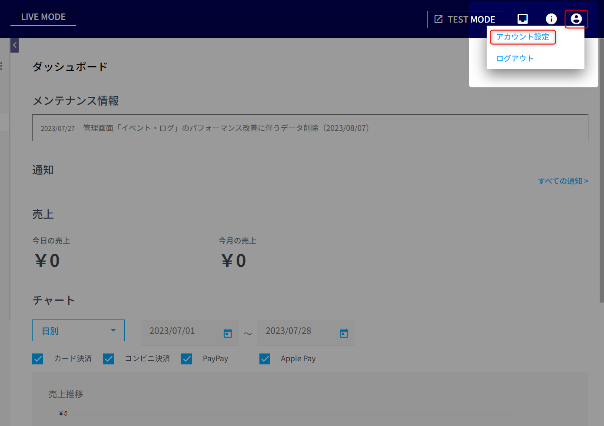
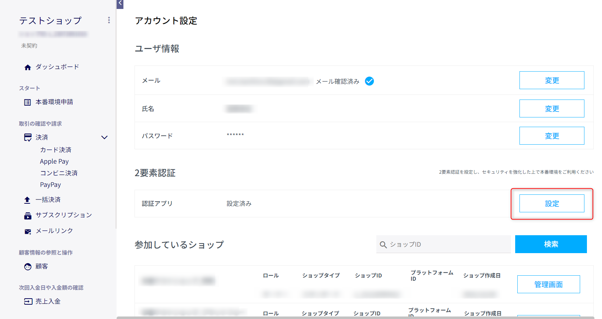

什么是双因素认证
双因素认证要求用户在输入常规密码之外，再使用一次性密码完成认证。
这样可以防止第三方利用泄露的密码非法登录，提高安全性。
每次登录 fincode 生产环境时都需要认证，请在注册新用户时完成设置。
使用双因素认证，需要在智能手机、电脑或平板等设备上安装可生成基于时间的一次性密码（TOTP）的应用。
fincode 未指定应用，请在使用的设备上安装自行选择的应用。
双因素认证应用（Authenticator）的设置步骤
本页介绍如何在电脑上的 Google Chrome 中使用 Authenticator。
如果使用其他设备或认证应用，请参阅ProductBlog。
第 1 步 安装认证应用
在 Chrome 浏览器中访问 Chrome 网上应用店。
搜索 Authenticator，然后点击「添加至 Chrome」进行安装。
※ 只能在 Chrome 浏览器中安装，可在 Windows 和 Mac 上使用。
第 2 步 在登录界面显示设置用二维码
完成生产环境的新用户注册后，在登录界面输入电子邮箱和密码，点击登录按钮继续。

第 3 步 设置认证应用
- 点击 Chrome 浏览器右上角的二维码图标，启动 Authenticator。
- 点击右上角的铅笔图标，再点击「+」。
- 如需扫描二维码，请点击「扫描二维码」，扫描双因素认证应用设置界面显示的二维码。如需手动输入，请点击「手动输入」，然后填写以下内容。
- 发行者：可自行设置，例如「商户名称-fincode 管理界面」。
- 密钥：粘贴双因素认证应用设置界面上的认证码。

- 点击「OK」后，Authenticator 会显示一次性密码。

第 4 步 输入一次性密码并登录
设置好 Authenticator 后，继续完成 fincode 认证。
- 在双因素认证应用设置界面点击「OK」，进入认证确认界面。
- 复制 Authenticator 显示的一次性密码，粘贴到输入框并点击「认证」，即完成双因素认证设置。
※ 即使电子邮箱与登录密码不匹配，页面也会跳转到设置用二维码的显示界面。
此时即使输入一次性密码也无法登录，请核对输入内容。
重新设置认证应用
登录管理界面后，将鼠标悬停在用户图标上，点击「账户设置」。

点击双因素认证旁的「设置」按钮，完成双因素认证设置。

※ 在测试环境中也可以按同样的步骤设置双因素认证。
无法登录时
在登录界面输入电子邮箱和密码，点击登录按钮。在认证确认界面点击「需要重新设置双因素认证的用户请点此处」。
在双因素认证重新设置界面点击「OK」后，系统会将重新设置双因素认证的链接发送到已登记的电子邮箱。访问该链接并完成设置。
※ 双因素认证要求登录密码和一次性密码均正确。若显示「认证失败。」，也可能是登录密码有误。